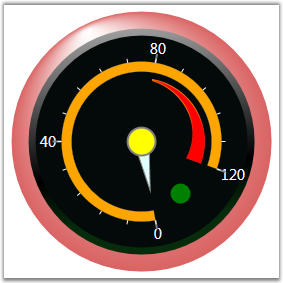

State Indicators are those which indicate some sort of state (e.g. either ON or OFF, TRUE or FALSE etc.) of the Gauge control. Active and Inactive will be based on state range. Below are some of the major properties that is implemented.
Table 10: Property Table
|
Property |
Description |
|
IndicatorWidth |
To specify the width for the indicators. Default value is 0. |
|
IndicatorHeight |
To specify the height for the indicators. Default value is 0. |
|
Location |
To specify the location of the indicators. Default value is Center. |
|
IndicatorStyle |
To change the appearance of the indicators. The available indicator styles are as follows.
CircularLED RectangularLED RoundedRectangularLED Text Custom
Default value is CircularLED. |
|
BackgroundBrush |
To specify the color for the indicator during inactive time. |
|
ActiveBackgroundBrush |
To set the color for the indicators during active time. |
|
Text |
Displays the text when the indicator is inactive. Default text displayed is OFF. |
|
ActiveText |
Displays the text when the indicator is active. Default text displayed is ON. |
|
IndicatorCustomGeometry |
Displays the state indicator in the shape specified by a custom Geometry.
Note that the custom shape will be set, if and only if, the IndicatorStyle property is set to Custom. |
State range can be added through StateRanges property of StateIndicator. The following code snippet adds a state range to the indicator.
|
[XAML]
<!--State Ranges property--> <syncfusion:StateIndicator.StateRanges>
<!--Range instance with start value and end value.--> <syncfusion:StateRange StartValue="180" EndValue="240"/> </syncfusion:StateIndicator.StateRanges> |
The above property settings are illustrated below.
|
[XAML]
<syncfusion:CircularGauge Name = "circularGauge1"> <syncfusion:CircularGauge.StateIndicators> <syncfusion:StateIndicator ActiveBackgroundBrush="Red" Location="65,70" BackgroundBrush="Green" IndicatorHeight="20" IndicatorWidth="20" FontSize="12" FontFamily="Verdana" Name="m_indicator1" IndicatorStyle="CircularLED" Text="Off" ActiveText="On"> <syncfusion:StateIndicator.StateRanges> <syncfusion:StateRange StartValue="180" EndValue="240"/> </syncfusion:StateIndicator.StateRanges> </syncfusion:StateIndicator> </syncfusion:CircularGauge.StateIndicators> </syncfusion:CircularGauge> |
|
[C#]
private StateIndicator m_indicator; m_indicator = new StateIndicator(); m_indicator.StateRanges.Add(new StateRange(180, 240)); m_indicator.BackgroundBrush = new RadialGradientBrush(Colors.White, Colors.DarkGreen); m_indicator.ActiveBackgroundBrush = new RadialGradientBrush(Colors.White, Colors.Red); m_indicator.FontSize = 12; m_indicator.FontFamily = new FontFamily("Verdana"); m_indicator.Text = "Off"; m_indicator.ActiveText = "On"; m_indicator.IndicatorWidth = 20; m_indicator.IndicatorHeight = 20; m_indicator.Location = new Point(58, 80); m_indicator.IndicatorStyle = IndicatorStyle.CircularLED;
circularGauge1.StateIndicators.Add(m_indicator); |
For the above C# code the output will be something similar to the below image.

Figure 37: State Indicator
 Note: Indicator will display either colors or
texts for the single state.
Note: Indicator will display either colors or
texts for the single state.
See Also
Binding between State Range and State Indicator
 Binding between State Range and State
Indicator
Binding between State Range and State
Indicator